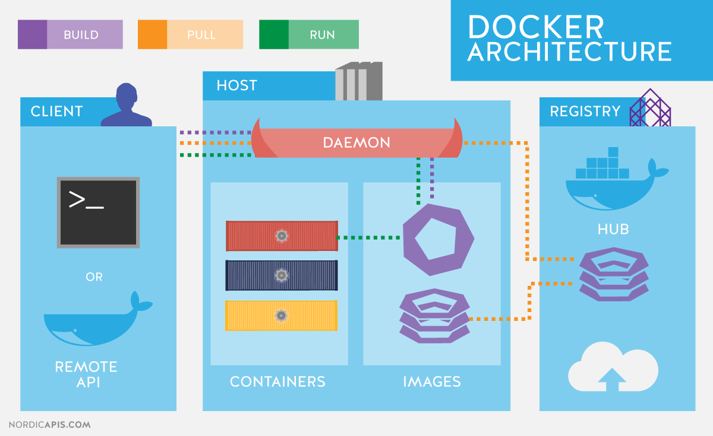

FROM scratch
MAINTAINER Michal Wojtowicz michal@wojtowicz.ovh
The real value of Docker is not technology, it's getting people to agree on something~ Solomon Hykes (CEO of Docker) @ Dockercon 2014
#docker has now had more security issues within a year then #freebsd #jails has had since 2000. Good job #techbros. http://t.co/Qx6OMjmqlI
— Benjamin Perrault (@creepingfur) 2014-12-13
Products of Docker Inc.
- libcontainerd
- Docker engine
- Docker hub
- Docker machine
- Docker registry
- Docker-compose
- Docker swarm
What is Docker? (#1)
- virtualization solution
- runs containers where isolates piece of software
- it can be run on each platform
- gives same environment wherever is used
What is Docker? (#2)
- makes easier to create, build and ship apps in containers
- single build contains only your application, libs/dependencies
- follows Open Container Initiative (part of Linux Foundation)
Docker alternatives
- rkt - 2014 by CoreOS
- LXD - 2014 by Canonical
- LXC - 2008 by the Kernel authors
- Linux VServer - 2008
- Windows Containers - 2016
Docker architecture
What is a container?

What is a container?
It looks like VM:
- own process space
- own network
- can run things as root
- can install packages
- can play with system services
What is a container?
But it's not a VM:
- share host's kernel
- can't boot different OS
- boot much faster
- doesn't emulate virtual hardware
How container differs from VM?

How container differs from VM?

Virtualization on Linux
- Containers share same Linux Kernel as host machine
- They always share Linux kernel
Virtualization on OSX and Windows
- Requires additional Virtual Machine with Linux Kernel
- Hyper-V on Windows 10
- HyperKit on macOS since Yosemite
- Docker-machine (based on Virtualbox) on earlier versions
Kernel namespaces - what's the point?
Each process is associated with a namespace and can only see or use the resources associated with that namespace, and descendant namespaces where applicable. There are also some exceptions.
PID namespace
- processes can see each other in bounds of same PID namespace
- first process in a namespace has assigned PID=1
Net namespace
Allows to own private network stack including:
- interfaces
- routing tables
- firewall rules
- sockets
Mnt namespace
- isolates mount points for a processes
- allows different views of the host's files
- mount points can be shared
UTS namespace
isolates the hostname and the NIS domain name
ipc namespace (interprocess communication)
- semaphores
- POSIX message queues
- shared memory
user namespace
- table of user IDs
- maps container's user to host user
- used for priviledge isolation
What is not namespaced?
- time - try to change it inside the container
/ # whoami
root
/ # uname -a
Linux 51a456ca0479 3.10.0-693.11.6.el7.x86_64 #1 SMP Thu Jan 4 01:06:37 UTC 2018 x86_64 Linux
/ # date +%T -s "10:13:13"
date: can't set date: Operation not permitted
- kernel keyring - syscalls are also blocked
- things under /sys/
One service - one container philosophy
- easier to scale
- easier to maintain
- doesn't face first process assassination issue
- more effort needed to configure than VM-like approach
Docker image
What is an image?
- overlays kernel
- can contain libraries/binaries
- can define exposed ports, workdir
- runs default process in container
What's inside the image?
- Linux distro dependencies like in Ubuntu image
- Prebuilt dependencies for app useful in containers
- Everything is packed up as layers
- Images are read-only
How to build own image?
Follow Dockerfile syntax
FROM <image>[:<tag>] # base image
RUN <command> # runs command only once during build
CMD command param1 param2 # runs on container boot
EXPOSE <port> [<port>/<protocol>...]
ENV <key> <value> # only inside a container
ADD [--chown=<user>:<group>] <src>... <dest>
COPY <src>... <dest>
ENTRYPOINT command param1 param2 # container will run as an executable
VOLUME ["/data"]
USER <user>[:<group>] # who runs executables
WORKDIR /path # where run executables
HEALTHCHECK [OPTIONS] CMD command
$ docker build .Sending build context to Docker daemon 15.36 kB
Step 1/4 : FROM alpine:3.2
---> 31f630c65071
Step 2/4 : MAINTAINER forest.gump@example.com
---> Using cache
---> 2a1c91448f5f
Step 3/4 : RUN apk update && apk add apache2 && rm -r /var/cache/
---> Using cache
---> 21ed6e7fbb73
Step 4/4 : CMD apache2
---> Using cache
---> 7ea8aef582cc
Successfully built 7ea8aef582cc
Multistage build (Docker >= 17.05)
FROM maven:3.5-jdk-8 as BUILD
COPY src /usr/src/myapp/src
COPY pom.xml /usr/src/myapp
RUN mvn -f /usr/src/myapp/pom.xml clean package
FROM tomcat:8.0-alpine
COPY --from=BUILD \
/usr/src/myapp/target/people-1.0-SNAPSHOT.war \
/usr/local/tomcat/webapps/myapp.war
Running container
$ docker run -it ubuntu:14.04 /bin/bash
$ docker run -it tomcat -d -p 8080:80
Docker-Compose - to the rescue
version: '3'
services:
web:
image: apache
links:
- database
ports:
- '8080:80'
volumes:
- ./project:/var/www:rw
database:
image: mysql$ docker-compose upUse cases
CI/CD
Bitbucket pipelines
- similar syntax to docker-compose.yml
- container with codebase is expected to finish it's work
- containers with codebase can run in parallel
- parallel containers can't see each other
- codebase can't be mounted to services
- codebase can be mounted into different containers with steps
- services are reachable through network only
image: alpine:latest
pipelines:
default:
- step:
image: node:8.9.4
caches:
- node_modules
script:
- npm run build
branches:
master:
- step:
script:
- ./generateReleaseNotes.sh
- ./updateVersionTag.sh
- ./broadcastRelease.sh
definitions:
services:
redis:
image: redis:3.2
mysql:
image: mysql:5.7
environment:
MYSQL_ROOT_PASSWORD: strong_and_secret
Gitlab pipelines
can organise chain of processes which leads to release

Gitlab pipelines
- similar syntax to docker-compose.yml
- container with codebase is expected to finish it's work
- containers with codebase can run in parallel as jobs
- parallel containers can't see each other
- codebase can't be mounted to services
- codebase can be mounted into different containers with steps
- services are reachable through network only
- services are the only way of having multiple containers
- services are reachable through network only
image: php:latest
services:
- mysql:5.7
variables:
MYSQL_DATABASE: fancyDB
MYSQL_ROOT_PASSWORD: secret
DB_HOST: mysql
DB_USERNAME: root
stages:
- test
- deploy
unit_test:
stage: test
script:
- composer install
- ./vendor/bin/phpunit
deploy_production:
stage: deploy
script:
- 'which ssh-agent || ( apt-get update -y && apt-get install openssh-client -y )'
- eval $(ssh-agent -s)
- ssh-add <(echo "$SSH_PRIVATE_KEY")
- mkdir -p ~/.ssh
- '[[ -f /.dockerenv ]] && echo -e "Host *\n\tStrictHostKeyChecking no\n\n" > ~/.ssh/config'
- ~/.composer/vendor/bin/envoy run deploy
environment:
name: production
url: http://192.168.1.1
when: manual
only:
- master
Security
Security - software updates
- kernel is updated by host, not by docker
- dependencies installed in an image are handled by image maintainer
Security - get rid of root privileges
- follow the principle of least privilege
- Docker requires root privileges to run, containers themselves do not
- process running in a container is no different from other process
- many images just run as root and leave it up to you
$ docker run -v /root:/tmp/rootdir alpine:latest ls -la /tmp/rootdir
drwxr-xr-x+ 126 root root 4032 Jun 21 13:43 .
drwxr-xr-x 7 root root 224 Jun 15 12:31 ..
-rw-r--r-- 1 root root 266 Nov 26 2017 secretFile.txt
FROM anyimage:latest
RUN groupadd -g 999 appuser && \
useradd -r -u 999 -g appuser appuser
USER appuserElastic Container Service (ECS)
- user manages clusters of containers
- cluster defines type of underlying EC2 instances
- one underlying instance can run many containers
- it's still up to user to administrate instances
Fargate
- user doesn't have to manage cluster and instances
- user precises only CPU/memory requirements
- containers are created on AWS managed instances
- Kubernetes support coming in 2018
Next step - orchestrastion
- Docker Swarm
- Kubernetes
- AWS/Azure/Google solutions
Questions?
Thank you for your time
Slides are available on
https://michailw.github.io/talks/docker/